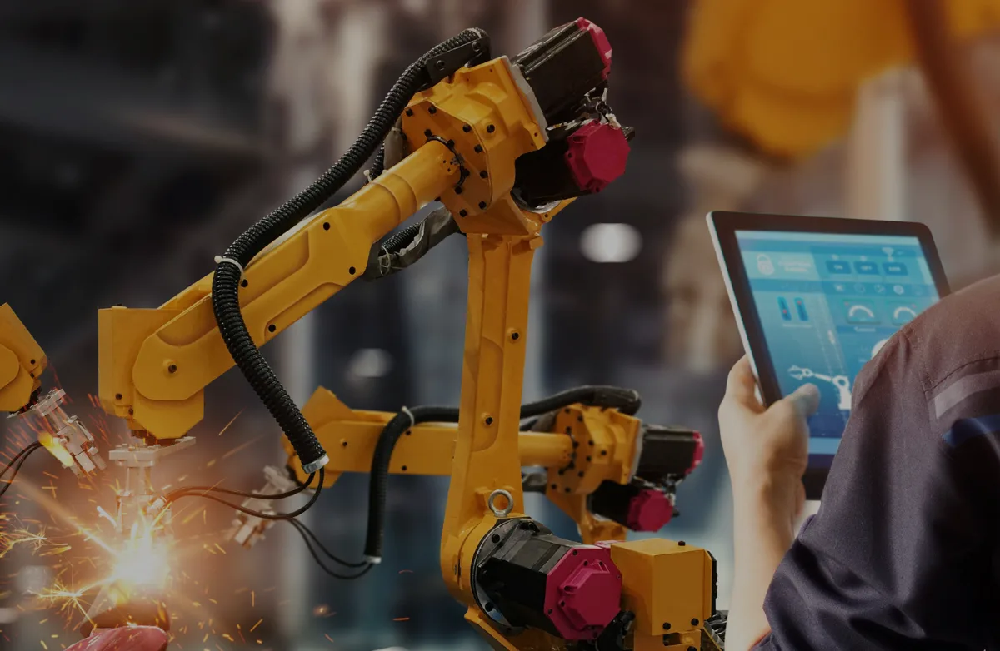
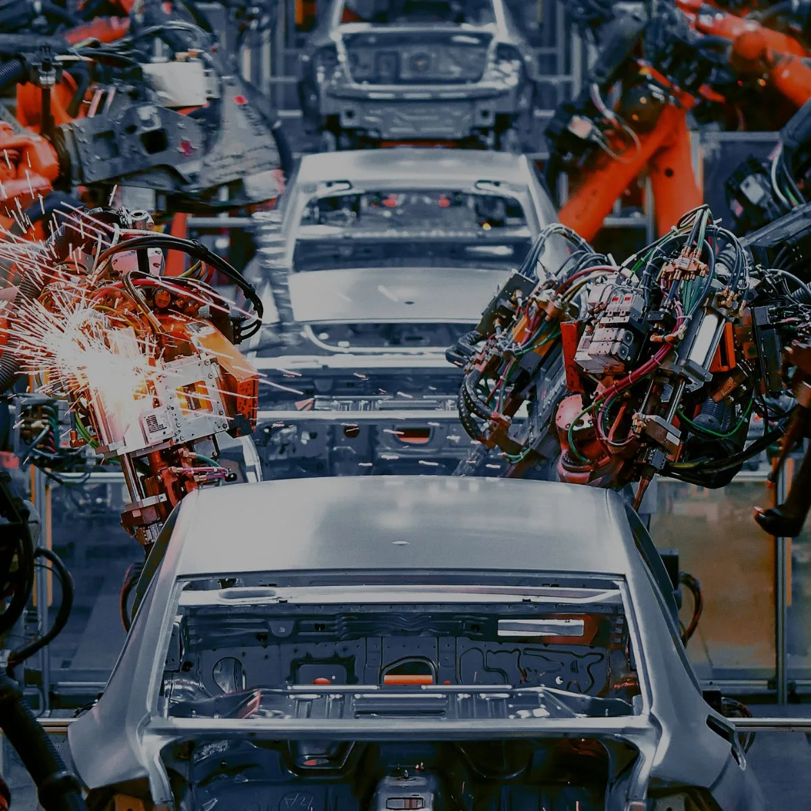
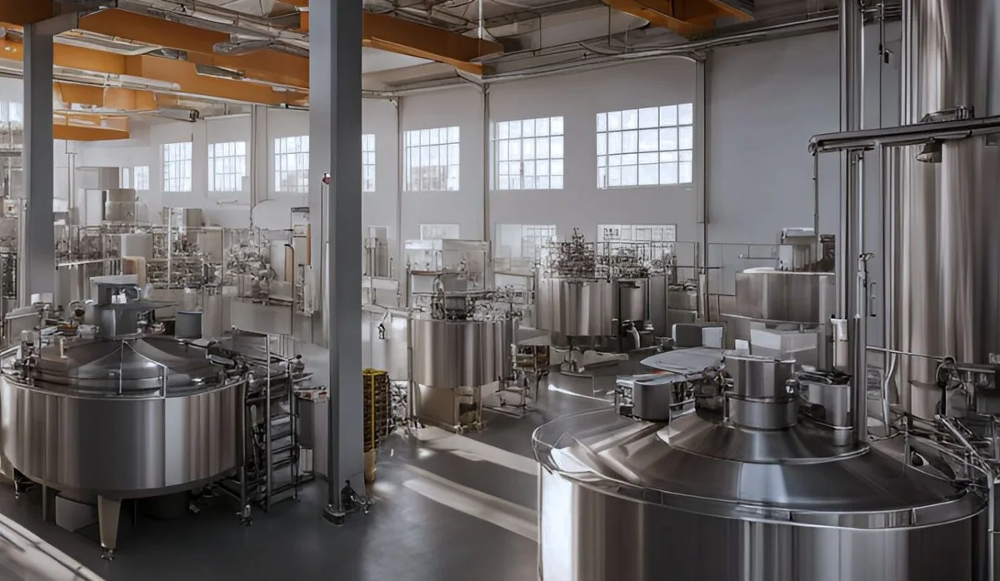
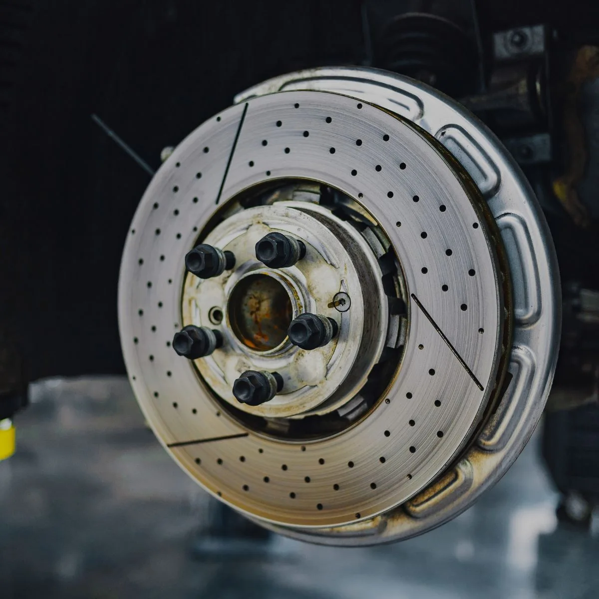
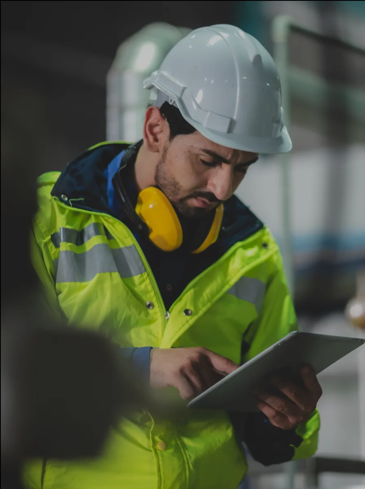
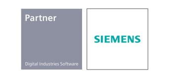
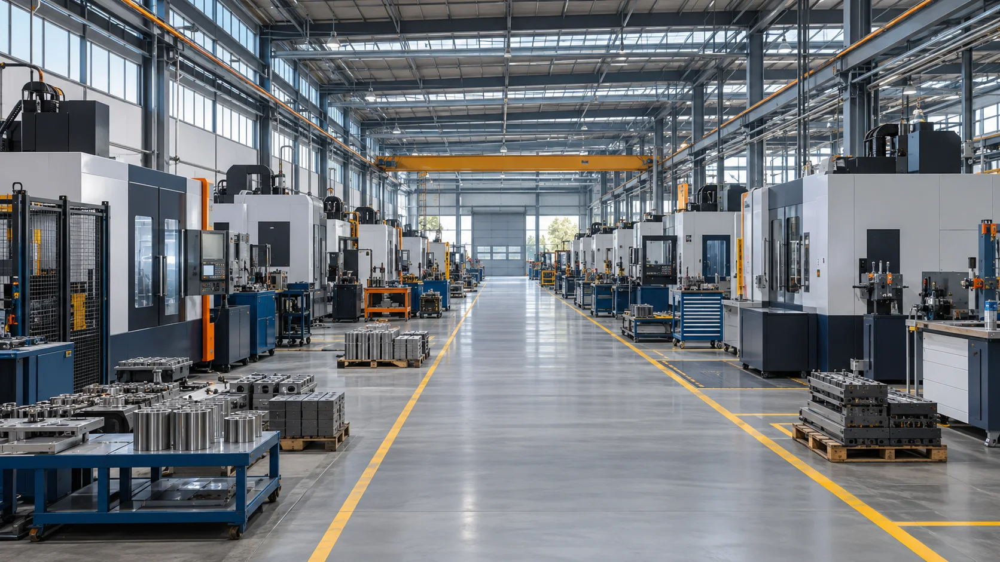

Evaluamos
Entendemos tu proceso y sus puntos críticos.

ANTAL M · EFFECTIVE MANUFACTURING SOFTWARE
Conectamos planeación, producción y datos.
Para que cada decisión mueva tu planta hacia adelante.
CONFIANZA QUE SE CONSTRUYE EN PLANTA
Algunos de nuestros clientesLA TECNOLOGÍA CORRECTA. EL SIGUIENTE NIVEL.
Conecta las piezas de tu operación con soluciones que entienden la realidad de la manufactura.

01APS / MANUFACTURA AVANZADA
Demanda, capacidad y recursos en un mismo plan.

02MES / MANUFACTURA AVANZADA
Visibilidad de lo que sucede. Control para actuar.

03APQS / MANUFACTURA AVANZADA
Del diseño del producto a su entrega.

TECNOLOGÍA GLOBAL. EXPERIENCIA CERCANA.
Somos partner de Siemens Digital Industries Software. Acompañamos a tu equipo desde la evaluación de procesos hasta la implementación y el soporte.

INTELIGENCIA ARTIFICIAL
Inteligencia artificial a la medida de tu operación. Exploramos posibilidades, desde el análisis y la visión hasta nuevas aplicaciones definidas contigo.

EXPERIENCIA EN DISTINTAS INDUSTRIAS
Entender el proceso, coordinar los recursos
y dar contexto a cada decisión.
DEL RETO A LA IMPLEMENTACIÓN
Personas, procesos y tecnología. Una misma dirección, en cada etapa de tu proyecto.
Entendemos tu proceso y sus puntos críticos.
Definimos viabilidad, prioridades y plan de trabajo.
Configuramos soluciones para tu operación.
Soporte, seguimiento y mejora continua.
DE LA COMPLEJIDAD A LA CLARIDAD